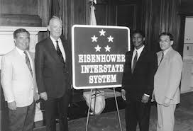

The history of the Internet all began with President Eisenhower. He created theAdvanced Research Projects Agency (ARPA) in 1958. President Eisenhower was afraid that the United States was falling behind the Soviet Union. In 1962, ARPA was still developing when an MIT graduate student named Leonard Kleinrock invented the technology of the Internet. Then in 1966 ARPA quickly got back into the action and formed the ARPAnet. This became the start of the Internet. The technological innovations that were to follow are mind boggling, but here are some important highlights. Even though the main participants in the network were universities and research organizations, other educational groups and commercial organizations wanted to participate as well. In 1973, Ray Tomlinson’s efforts produced e-mail. In 1989, Tim Berners–Lee (a scientist) proposed the World Wide Web Project. Not too much later a browser called Mosaic was created by a group of University of Illinois students led by Marc Andreessen in 1993. Netscape and Microsoft followed with their own browsers. Now just about anyone can surf the Internet.  One of Eisenhower's enduring achievements was championing and signing the bill that authorized the Interstate Highway System in 1956. He justified the project through the Federal Aid Highway Act of 1956 as essential to American security during the Cold War. It was believed that large cities would be targets in a possible war, hence the highways were designed to facilitate their evacuation and ease military maneuvers. Eisenhower's goal to create improved highways was influenced by difficulties encountered during his involvement in the U.S. Army's 1919Transcontinental Motor Convoy. He was assigned as an observer for the mission, which involved sending a convoy of U.S. Army vehicles coast to coast. His subsequent experience with German autobahns during World War II convinced him of the benefits of an Interstate Highway System. Noticing the improved ability to move logistics throughout the country, he thought an Interstate Highway System in the U.S. would not only be beneficial for military operations, but provide a measure of continued economic growth. The legislation initially stalled in the Congress over the issuance of bonds to finance the project, but the legislative effort was renewed and the law was signed by Ike in June 1956.